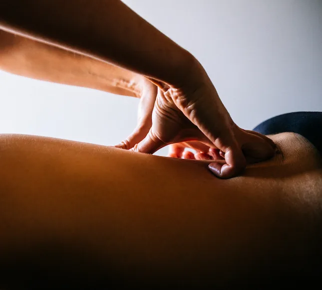
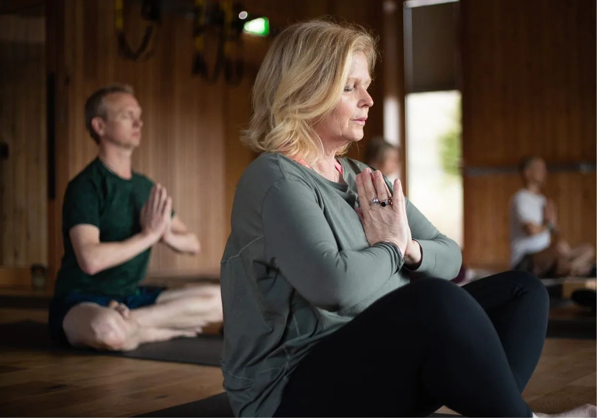
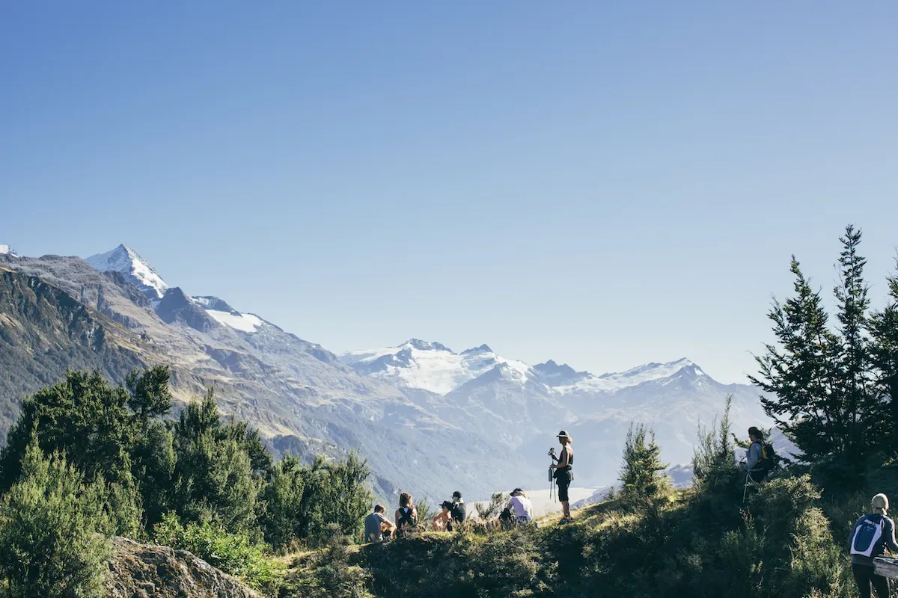
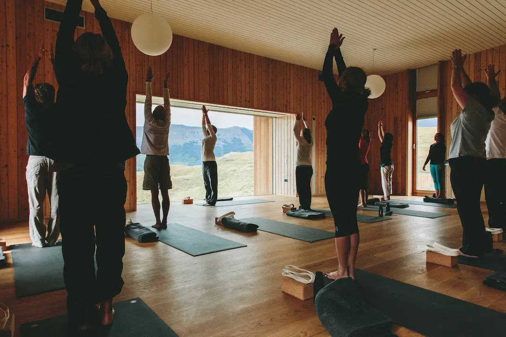
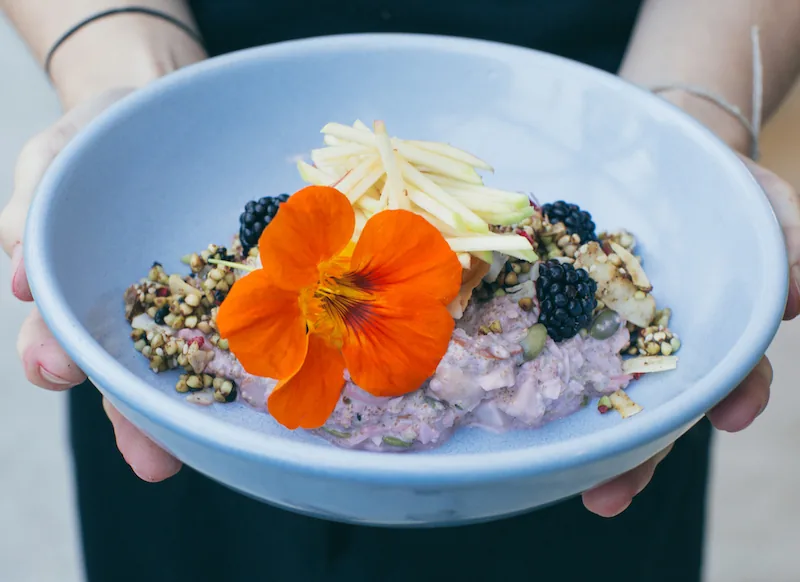
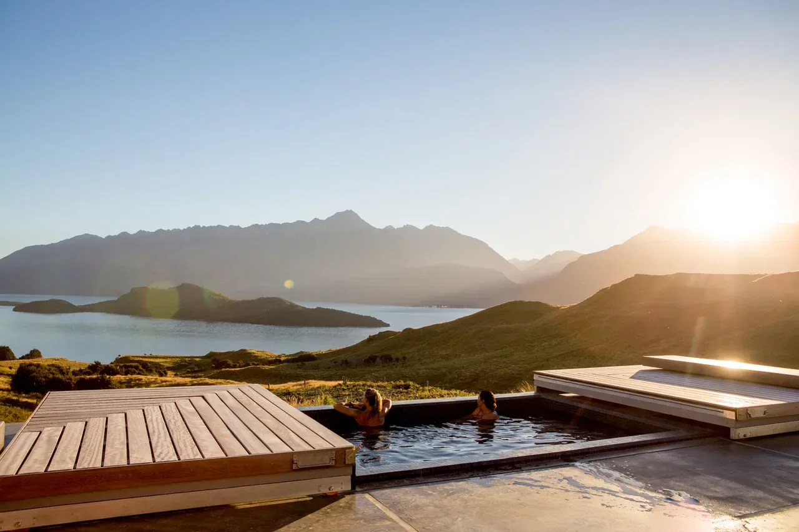
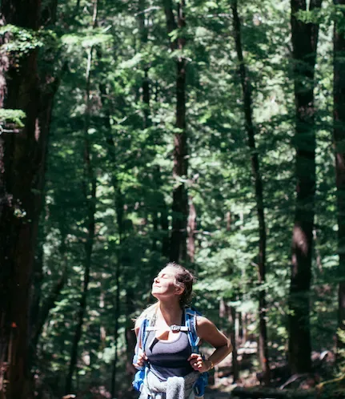
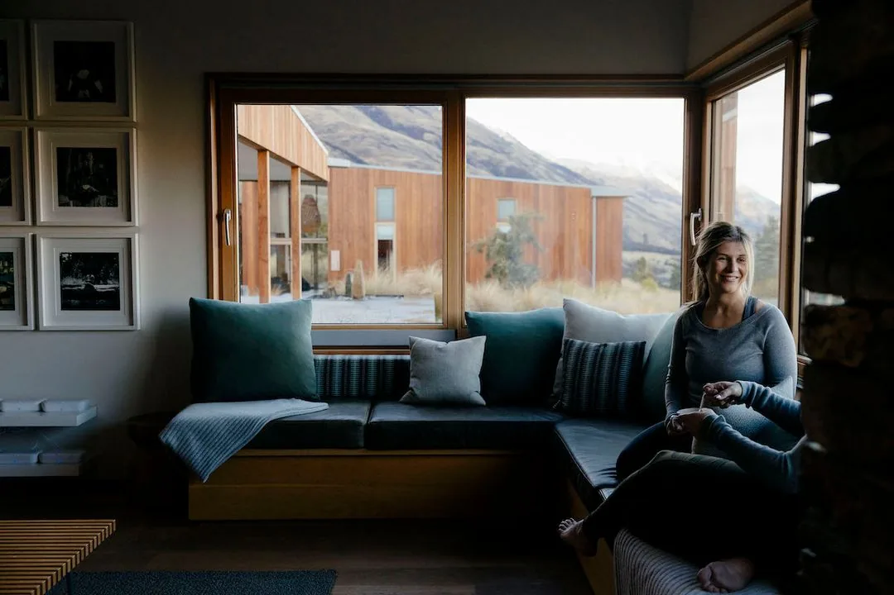
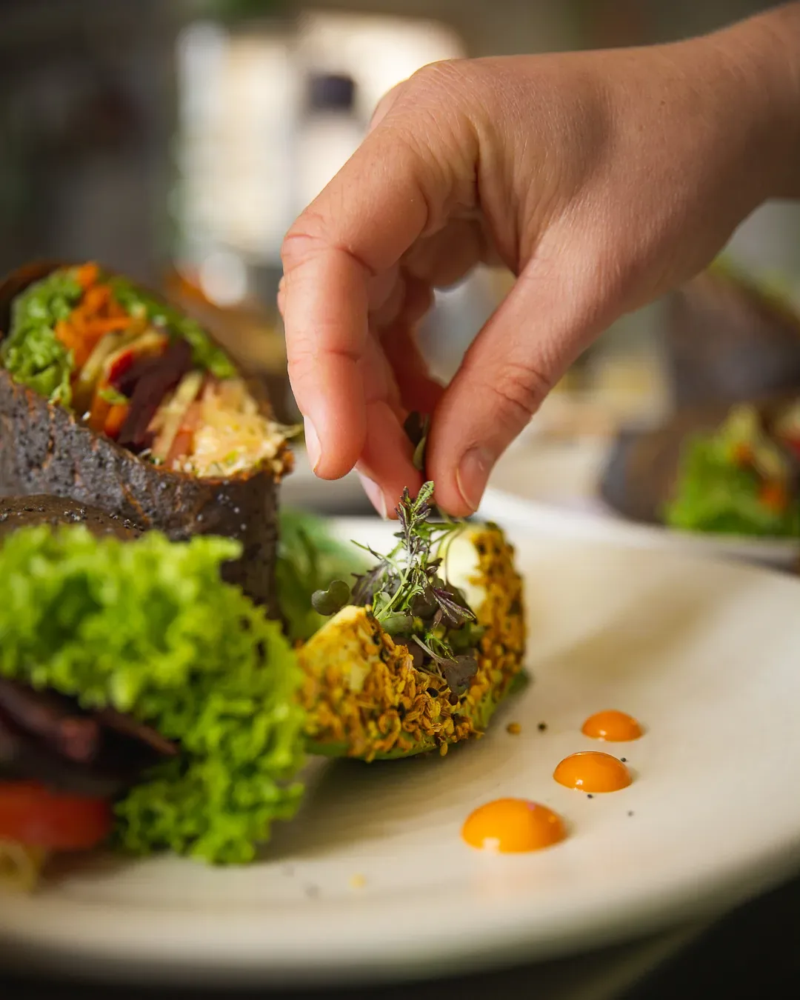
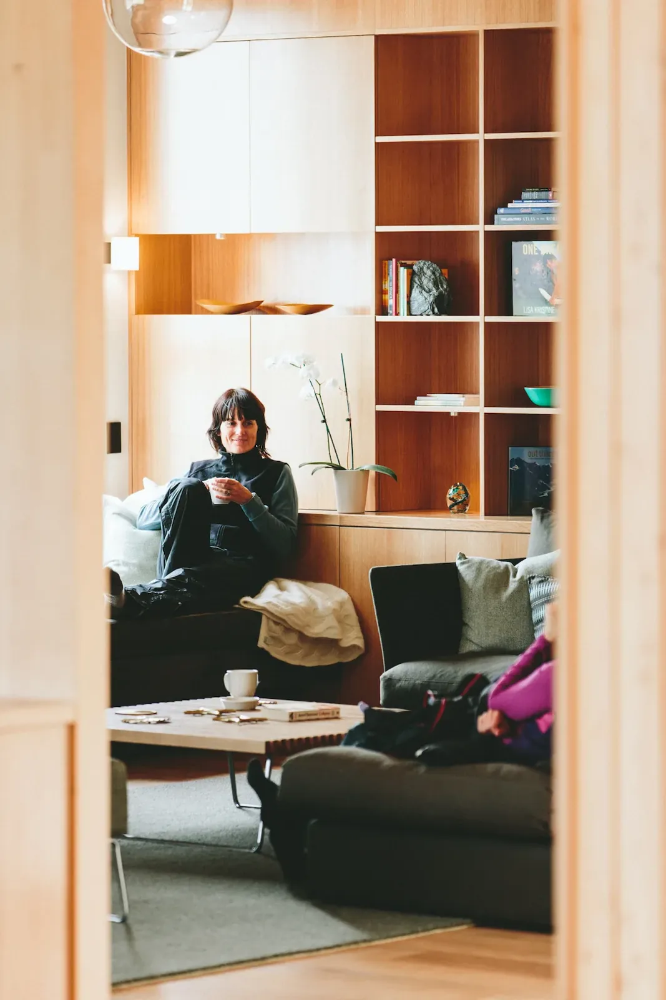

Encuentra tu
Retiro
Siempre es buen momento para retirarte un poco del ruido.
Nuestros cuerpos recuerdan lo que se siente al estar vivos de verdad. ¿Es hora de volver?
Tanto si estás recuperándote, floreciendo o en algún punto intermedio, aquí hay un lugar para ti.
Cada propuesta es una invitación, no una exigencia. El retiro busca acompañarte desde donde estás. Un cuidado profundo, sencillo y verdadero.
Elige un fin de semana de reito, cinco días de retiro o retiro terapéutico individual. El camino es tuyo. A veces todo empieza con una sola decisión.
Buscar por tipo
Buscar por precio
De menor a mayor
- 02 Aug 26 , Essential (5 Day) From $ 6250 NZD
- 02 Aug 26 , Essential (5 Day) From $ 6250 NZD
- 02 Aug 26 , Essential (5 Day) From $ 6250 NZD
- 02 Aug 26 , Essential (5 Day) From $ 6250 NZD
- 02 Aug 26 , Essential (5 Day) From $ 6250 NZD






Programas cuidadosamente diseñados
Renace & Florece
Este es el corazón de Iani Village: no solo una pausa, sino una oportunidad real de transformación. Una propuesta íntima donde la naturaleza, el cuerpo y la consciencia se encuentran… y sostenido desde una mirada humana y consciente, el retiro crea un contexto fértil para el cambio.
Cada retiro sigue una estructura común: llegada, profundización e integración:
FIN DE SEMANA — 3 DÍAS
Tres días pueden abrir mucho más de lo que parece cuando hay silencio, estructura y espacio interior. Un retiro breve, accesible y significativo.
INMERSIÓN — 7 DÍAS
El retiro de cinco días ofrece una travesía más extensa y transformadora. Ideal para quien siente que necesita algo más que una pausa: una verdadera recolocación interior.
INDIVIDUAL — Tiempo Personalizado
El retiro terapéutico individual permite un acompañamiento más cercano y una experiencia adaptada a tu momento vital, tu ritmo y tus necesidades.
Cada formato está diseñado para acompañar de una manera distinta, pero todos nacen de la misma intención: ofrecer un contexto bello, humano y profundo para volver a ti. Tú eliges la puerta de entrada.
No hace falta experiencia previa ni una condición física especial. Todo se adapta a ti.
VER MÁS
Todos los retiros terminan en domingo
Lowest to highest
- 02 Aug 26 , Essential (5 Day) From $ 6250 NZD
- 02 Aug 26 , Essential (5 Day) From $ 6250 NZD
- 02 Aug 26 , Essential (5 Day) From $ 6250 NZD
- 02 Aug 26 , Essential (5 Day) From $ 6250 NZD
- 02 Aug 26 , Essential (5 Day) From $ 6250 NZD




Un día típico en Iani Village
A continuación puedes ver un ejemplo de lo que se vive en un día de retiro en Iani Village. El retiro tiene un ritmo progresivo: cada día prepara el siguiente y profundiza lo vivido. Lo mejor es vivirlo.
Yoga
Yoga is a panacea. Shown to enhance your mobility, improve mental health, reduce stress, and increase strength. Still not impressed? Yoga has also been shown to deepen sleep and alleviate chronic pain while introducing many to concepts of mindfulness.
Yoga
Yoga is a panacea. Shown to enhance your mobility, improve mental health, reduce stress, and increase strength. Still not impressed? Yoga has also been shown to deepen sleep and alleviate chronic pain while introducing many to concepts of mindfulness.
Yoga
Yoga is a panacea. Shown to enhance your mobility, improve mental health, reduce stress, and increase strength. Still not impressed? Yoga has also been shown to deepen sleep and alleviate chronic pain while introducing many to concepts of mindfulness.
Yoga
Yoga is a panacea. Shown to enhance your mobility, improve mental health, reduce stress, and increase strength. Still not impressed? Yoga has also been shown to deepen sleep and alleviate chronic pain while introducing many to concepts of mindfulness.
Yoga
Yoga is a panacea. Shown to enhance your mobility, improve mental health, reduce stress, and increase strength. Still not impressed? Yoga has also been shown to deepen sleep and alleviate chronic pain while introducing many to concepts of mindfulness.
Yoga
Yoga is a panacea. Shown to enhance your mobility, improve mental health, reduce stress, and increase strength. Still not impressed? Yoga has also been shown to deepen sleep and alleviate chronic pain while introducing many to concepts of mindfulness.
Yoga
Yoga is a panacea. Shown to enhance your mobility, improve mental health, reduce stress, and increase strength. Still not impressed? Yoga has also been shown to deepen sleep and alleviate chronic pain while introducing many to concepts of mindfulness.
Yoga
Yoga is a panacea. Shown to enhance your mobility, improve mental health, reduce stress, and increase strength. Still not impressed? Yoga has also been shown to deepen sleep and alleviate chronic pain while introducing many to concepts of mindfulness.
Yoga
Yoga is a panacea. Shown to enhance your mobility, improve mental health, reduce stress, and increase strength. Still not impressed? Yoga has also been shown to deepen sleep and alleviate chronic pain while introducing many to concepts of mindfulness.
Yoga
Yoga is a panacea. Shown to enhance your mobility, improve mental health, reduce stress, and increase strength. Still not impressed? Yoga has also been shown to deepen sleep and alleviate chronic pain while introducing many to concepts of mindfulness.
La diferencia de Iani Village
Solicitar información
- Paseos conscientes por entornos naturales de Galicia
- Estiramientos y práctica corporal consciente
- Propuestas de cuerpo para despertar energía y presencia
- Comida vegana, sencilla, nutritiva y ligera
- Cultiva claridad con meditación y presencia consciente.
- Recupérate con espacios diarios de descanso e integración.
- Acompaña el cambio comprendiendo mejor cómo funciona tu mundo interno
- Sumérgete en una atmósfera de descanso, belleza natural y presencia.
- Descansa en un alojamiento sencillo, cuidado y en armonía con la naturaleza.
- Disfruta de grupos pequeños y atención cercana.
Contacto
Llámanos
Sigue en contacto con la esencia del retiro. Suscríbete para recibir reflexiones, inspiración, propuestas de cuidado y momentos de presencia para integrar en tu vida cotidiana.